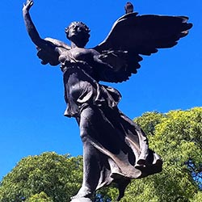

Actividades al Aire Libre expresion corporalejercicios a la orilla del lagocaminatasciclismo y descansoContacto con la naturaleza Palmeras PindoFlores y Aurora. E.PeynotArcoiris por Chorros de aguaFauna del lugarArte y Cultura

Victoria Alada. ERubinoMural con personajesLago con peces KOI y patosParque obra del arquitecto Carlos Thays Social e Infantil InformacionJuegos clasicos de veredaBello CarruselJuegos infantiles